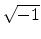
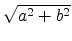

| Gaussian Primes |
The complex numbers a + bi, where i =  and a and b are integers, are called the Gaussian integers. The norm of a complex number is given by . Every Gaussian integer can be factorized as a product of Gaussian primes. You task is to determine if a given Gaussian integer is a prime, i.e., if it can not be written as the product of two other Gaussian integers, x and y, where both x and y have norms larger than 1 (This is the same as requiring both x and y to be different from 1, -1, i and - i). For example, 2 = (1 + i)(1 - i), and, therefore, 2 is not a prime. 11 is a Gaussian prime, but 13 = (3 + 2i)(3 - 2i) is not a prime. In the same way, 3 + i = (1 + i)(2 - i) is not a prime.
You are given a list of n Gaussian integers. The first
number, n, in a row by itself,
is the number of Gaussian integers that follow. This
number is followed by n pairs of (possibly negative) integers, one
per row,
representing, respectively, the real and imaginary part of each
Gaussian integer. The absolute value of the
real and imaginary parts of every input number
will be no larger than 10000, and the list will not have more than
100 numbers. Additionally, every pair (a,b) satisfies
a2 + b2  2.
2.
For each Gaussian prime in the input, you should write the letter P, for Prime. For each non-prime, you should write the letter C, for Composite.
6 2 0 3 0 5 0 13 0 3 1 10 1
C P C C C P